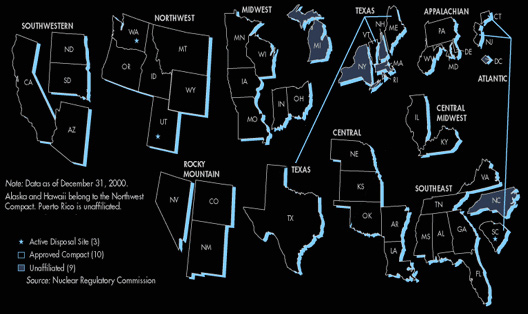
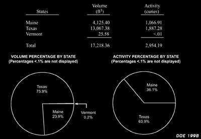

Texas Radiation Online - The Texas CompactFor the latest regarding the strong possibility that Texas will now additionally take
waste from the Central Compact (Nebraska, Kansas, Arkansas, Oklahoma,
and Louisiana), please check out the
Latest News page. The Texas Compact: Nuking Texas to Protect Texas?
In 1980, Congress passed the Low-Level Radioactive Waste Policy Act. This law
responded to the fact that the nuclear industry had been unable to build new disposal
facilities due to public opposition, and the 3 big sites (Barnwell SC, Richland WA, and Clive, UT)
were pressing for relief from shouldering the national waste burden. Pursuant to the
Low-Level Radioactive Waste Policy Amendments Act of 1985, states are to manage their LLRW
by forming compacts amongst themselves. So, the Texas Compact is an agreement between the
states of Maine, Texas and Vermont regarding the disposal of commercial LLRW.
As a compact, these States require only one disposal facility for the compact
region in a host state (Texas). The formation of each Compact requires the
approval of the federal government through Congressional legislation. Thus far
ten Compacts have received the approval of Congress.
Several interstate compacts have dissolved, and not one so far has built a
disposal facility for this purpose. The Texas
Legislature had made the decision to join the compact in 1993. When the
Texas Compact was ratified by US Congress in 1998, Sierra Blanca was sited
as the disposal facility
and was defeated when opposition from the Mexican Government added to the pleas
of Texas activists, threatening to pull out of the NAFTA negotiations.

The Texas Compact was been approved by all three party states and received
Congressional approval. Each member State
are to each contribute $25 million to the State of Texas, in exchange for 50
years of access to a proposed Texas Compact disposal facility. Maine and
Vermont benefit under this arrangement by being ensured access to a disposal
facility, without a more expensive in-state siting process.
But do they generate the waste to need it?*
[*Maine left the
Compact in 2004, having decommissioned its nuclear power plant- it's primary
source of waste; Vermont's nuclear plant, originally scheduled to decommission
in 2013, is now working on a 20-year license extention to decom in 2033]
Although the true purpose of the Texas Compact was to provide less expensive
disposal rates for industry, it was sold under the idea that it supposedly
protected the host state (Texas) from being forced to receive out-of-compact
wastes at regional disposal facilities. In reality, the compact commissioners
could vote to allow disposal from anywhere outside of the compact on a
case-by-case basis. This is what is commonly referred to as the "compact
loophole." [The compact commissioners are assigned by the Governors of the
party states, one voting member from each party state except the host state
which is entitled to having six voting members.]
In 1999, when Attorney General John Cornyn was queried as to whether a law
enacted for the purpose of prohibiting private disposal facilities from
accepting waste generated by the DOE would be valid, he responded that "a law
enacted specifically for the purpose of precluding DOE waste disposal at
private facilities would face a federal constitutional challenge on the grounds
that it violates the Supremacy Clause and the Commerce Clause of the United
States Constitution" ... "Federal courts have found state laws unconstitutional
which restrict the flow of hazardous waste in the states where the laws were
designed to protect state disposal capacity and the state's environment." The
Supreme Court has ruled that hazardous wastes qualify as "out-of-state goods"
protected under the Commerce clause, and the flow of goods involved in
interstate commerce are not to be interrupted. Thus, a private facility which
receives waste can not be denied doing business with any party it wishes.
However, he continues by pointing out that under the then-active section 401.203 of the Health
and Safety Code, "[a] radioactive waste disposal license may be issued only to
a public entity specifically authorized by law for radioactive waste disposal,"
and states that "because the DOE's current policy limits disposal of DOE waste
to state-licensed facilities, the result is that private companies in Texas may
not dispose of DOE waste."
Section 401.203 was repealed during the 78th Session of the Texas State Legislature when HB1567
passed, and was really the only protection under the law that existed to keep
Texas from becoming home to a private disposal facility receiving huge volumes
of waste from all over the country. Every legislative session, industry
lobbyists have attempted to nullify this section, and additionally petitioned to become a
disposal facility for the Texas Compact. This is particularly true in the case
of Waste Control Specialists LLC, however, WCS has stated that disposing of
waste from a State Compact would not be sufficiently lucrative for the profits
that it seeks, and has from the beginning aimed for becoming a full-fledged DOE
disposal facility. This and the percieved threat of a dirty bomb were the driving
arguments for HB1567. Corporations were seen to be needing a commercial
incentive to open a dump, and the DOE was, despite having its own
disposal facility at the Nevada Test Site, painted as a pitiful giant
without a dump for its own mess. The pitiful giant analogy was more fitting for the
commercial power plant operators who require site for their waste
disposal dependency, remedied by the spirit of the Compact system.
In April 2002, Governor Angus King of
Maine signed legislation to withdraw Maine
from the Texas Compact, which took effect in 2004. The
Compact itself required reauthorization in 2003 by US Congress.
With the current administration, and the absence
of such strong democrats such as Sen Paul Wellstone,
opposition to pro-business agenda has been replaced by a
gung-ho deregulation not seen since the Reagan era.
Several interstate compacts have dissolved, and not one so far has sited a disposal facility.
As the host State, if Texas withdraws from the compact after a compact disposal site starts receiving waste, Texas
will be obligated under law to take waste from Maine and Vermont for 5 years without receiving
any financial reimbursements.
During the 78th Texas Legislature, there was even a rumor that Maine might rejoin the Texas
Compact, but it was never substantiated, and likely originated with disposal proponents.
Since the enactment of the LLRWPA, states have formed 10 compacts, which have fallen apart in various manners.
States and compacts have spent about $600 million for siting efforts, but they
have not been able to build a new LLRW disposal facility. Greta Dicus, a NRC commissioner
and commissioner for the Central Compact, commented that "the compact system in the United States does not work,
has never worked, and probably never will work."
Dr.
Greg Hayden, the Nebraska Commissioner for the Central Compact Commission, has
also observed that "the only driver for new sites has been the compact law, not
demand... new Compact sites are neither needed nor would they be economically
viable." With the failure of
the Compact system's promises, the nuclear industry is clearly
becoming desperate in its attempts to justify its ongoing operation, which requires
massive disposal facilities to operate. Proponents hope that if Texas opens a dump (as the last
domino), it will not only revitalize the Compact system, but in some cases hope that
it will modify the Compact system to remove any "socialist notions" that such a system
will protect states from outside importation.
The compact system has received many other similar criticisms, and is widely
seen as a "has been" dysfunctional solution to the radioactive waste problem.
Without the Texas Compact, waste would not be sent across country on highways
from the pacific northwest through unrelated states. Texas doesn't need a dump
for its own waste, as generators other than nuclear power plants do not
generate substantial amounts of waste to warrant a disposal facility. Waste
generated at these power plants could be stored inside of the decommissioned plant's
containment, sparing Texas highways from radioactive waste shipments.

As stated, the majority of Texas compact waste is from Texas' nuclear power plants.
Maine's power plant, the Maine Yankee, is completely decommissioned, making the compact's
volumes even smaller than these 1998 estimates, and the Texas share of the Compact waste
even greater than it's previous majority.
It is simply not cost-effective for either
Maine or Vermont to give Texas half of their $25 million share to enter into the deal.
As stated earlier, Vermont's power plant may be granted a license renewal, and thus be
decommissioned in 2033 rather than 2013.
WCS in Andrews County says they won't be able to profit on
the projected 2.7 million cubic feet of waste from the Texas Compact (35-year estimated total), and
instead lobby to dispose of the much larger amounts of
DOE and DOD wastes (estimated at nearly 250 million cubic feet for 2000-2010 alone).
Compact Commissioners will have the authority to bring in unlimited
amounts of waste on a case-by-case basis from sources outside of the compact.
Would a compact dump accomodate the profit motive of a disposal company? Could the site later
even be formally declared opened up to non-Compact generators by future legislatures?
Should the Texas Compact be done away with entirely? We believe the answer to these questions
is yes- building a dump could very potentially set in motion a nasty chain of events that can
and should be avoided. Texas should definitely refrain from the compact while it has the
opportunity and has not yet built a dump or formed a Compact Commission.
These are the questions we asked previous to the 2003 78th Texas Legislature, and with the
change of events we find ourselves in at the moment, the Texas Compact has thus-far been
unsuccessful statutorily in preventing a separate federal waste dump from being mandated
by Texas law in addition to a facility for Texas Compact waste. The intention was to provide
an incentive package for corporations to operate the facility, rather than the State of Texas.
Now we ask- will this be challenged? The spirit of the Compact has been conveyed as a supposed
protection from this additional importation of waste. The federal Supremacy clause should,
in theory, assist Texas in protecting itself from these sortof greedy shenadigans of opening
a new federal dump so that a company may profit at our State's expense, and in this way the
Compact may, in the short term, protect Texas health and safety by preventing the federal dump, however- the
Texas Compact allows that Texas may become the next national dump for commercial waste,
and that the Compact Commissioners could import massive amounts of waste they are petitioned
with after the closing of
the Barnwell facility.
Supporting the Compact calls for bringing a
radioactive waste dump in Texas. Those who believe that we are protected by
the compact merely echo the politicians of yesterday and should instead call
for a revitalization of of previous Texas law which prohibits private companies
from obtaining a disposal license. Saying no to the compact means opposing
radioactive waste disposal in Texas.
An ally once opposed the Compact saying, "The nuclear industry and its government accomplices argue that without the
compact bill Texas would be forced to accept waste from other states. If Texas
is truly interested in not becoming a nuclear dumping ground, it shouldn't
build a dump at all." Once a dump is opened in Texas, it will experience a flood of waste following the
closing of the Barnwell in 2008, from an addicted nuclear industry
seeking its familiar waste disposal fix. This addiction, this psychological public health problem,
stops when we stop producing reactor waste, realizing that our industrial and medical needs for
isotopes are already provided for with whats been generated from reactors already,
and that more is simply not necessary.
[Tex. Health & Safety Code § § 401.203, 403.006 7.04]
[105th US Congress, HR
629, Texas Low-Level Radioactive Waste Disposal Compact Consent Act,
01-27-1998]
[Texas Ofc of Atty Gen, Cornyn Opinion No. JC-0052, May 18, 1999]
[Radwaste Solutions, Nov/Dec 2001, Engaging and Exchanging in Connecticut, p.
40] ["Excess Capacity for the Disposal of Low Level Radioactive Waste in the
United States Makes the Compact System Unnecessary," Greg Hayden, 1997]
["Compact Bill's Death is a Victory for Texas," Austin American Statesman,
November 3, 1995.]
[GAO, 1999 General Accounting Office, "Low-Level Radioactive Wastes: States Are Not
Developing Disposal Facilities," GAO/RCED-99-238, September 17, 1999.]